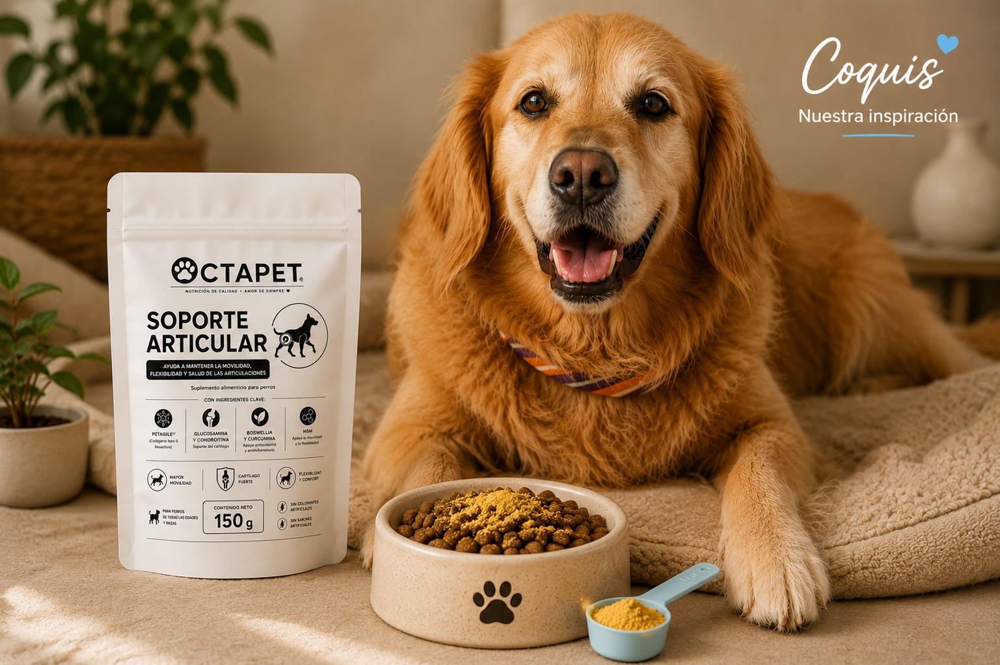
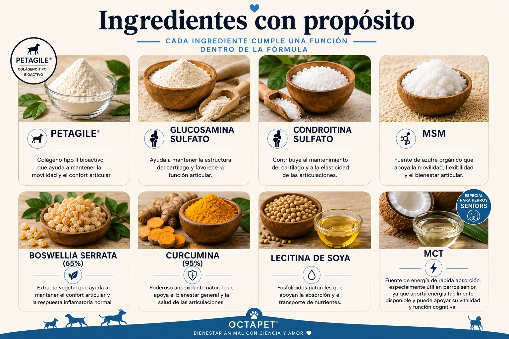

Soporte articular para perros
Movilidad, confort y bienestar diario
Fórmula en polvo desarrollada para acompañar el cuidado articular de perros adultos, senior, razas grandes o perros jóvenes con alta actividad física que necesitan apoyo extra en su rutina diaria.

¿Para quién es?
Pensado para perros que necesitan apoyo extra
Ideal para perros adultos o senior, perros de razas grandes y también para perros jóvenes con alta actividad física o mayor demanda articular.

Perros adultos y senior
Para acompañar el bienestar articular conforme pasan los años.

Razas grandes
Especialmente pensado para perros que cargan más peso sobre sus articulaciones.

Perros jóvenes muy activos
Útil en perros con alta demanda física que necesitan soporte adicional para movilidad y articulaciones.

Apoyo diario
Fácil de integrar al alimento como parte de una rutina constante de cuidado.
Ingredientes con propósito
Cada ingrediente cumple una función dentro de la fórmula
PETAGILE®, glucosamina, condroitina, MSM, boswellia, curcumina, lecitina y MCT forman parte de una mezcla pensada para acompañar la movilidad, el confort y el bienestar articular diario.

Modo de uso
Administración sencilla en polvo
Mezcla la porción con su alimento habitual. Para una mejor adaptación, se recomienda iniciar con media porción durante los primeros 5 a 7 días.
Presentación
Contenido neto: 150 g
Dosis sugerida
La cantidad diaria depende del peso del perro y puede ajustarse según su condición o recomendación veterinaria.
Uso diario
Agregar al alimento una vez al día como parte de su rutina de bienestar y movilidad.
Guía de porciones por peso
Referencia orientativa para un envase de 150 g.
| Peso del perro | Porción diaria | Duración aprox. del envase |
|---|---|---|
| Hasta 5 kg | 1 g al día | 150 días |
| 5 a 10 kg | 2 g al día | 75 días |
| 10 a 15 kg | 3 g al día | 50 días |
| 15 a 20 kg | 4 g al día | 37 días |
| 20 a 30 kg | 5 g al día | 30 días |
| 30 a 40 kg | 6 g al día | 25 días |
| Más de 40 kg | 7 g al día | 21 días |
Esta guía es orientativa y puede ajustarse según edad, nivel de actividad, condición corporal o recomendación profesional.
Inspirado por Coquis
Pensado para seguir viéndolos correr felices
Coquis, nuestra golden de 11 años, sigue corriendo, jugando y disfrutando la vida con una energía que nos inspira todos los días. Este producto nació pensando en perros grandes como ella, para acompañar su movilidad, confort y bienestar a lo largo del tiempo.
Lo que hay detrás de la fórmula
- Ingredientes seleccionados por su función en movilidad, confort y soporte articular.
- Combinaciones pensadas para trabajar en conjunto, no solo por separado.
- Decisiones basadas en literatura científica y en ingredientes con sentido dentro de la fórmula.
- Una propuesta práctica, bien dosificada y con una buena relación calidad-precio.
¿Te interesa?
Próximamente disponible
Estamos preparando los primeros productos de Octapet. Si quieres saber cuándo estará disponible o resolver dudas, escríbenos.